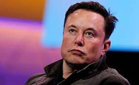

Elon Musk. Entrepreneur, Investor and Business Magnate
- Born on June 28, 1971 in Pretoria, South Africa.
- Moved to Canada at age 17 after briefly attending University of Pretoria.
- He moved to California in 1995 to attend Stanford University but decided to pursue a business career instead.
- He co-founded the web software company Zip2 with his brother Kimbal.
- He sold Zip2 to Compaq for $307 million in 1999
- The same year he co-founded online bank X.com, which merged with Confinity in 2000 to form Paypal.
- Paypal was sold to ebay in 2002 for $1.5 billion
- In 2002, Musk founded SpaceX, an aerospace manufacturer and space transport services company of which he is CEO and chief engineer
- In 2004, he joined electric vehicle manufacturer Tesla Motors, Inc. (now Tesla, Inc.) as chairman and product architect, becoming its CEO in 2008.
- In 2006, he helped create SolarCity, a solar energy services company that was later acquired by Tesla and became Tesla Energy.
- In 2015, he co-founded OpenAI, a nonprofit research company that promotes friendly artificial intelligence.
- In 2016, he co-founded Neuralink, a neurotechnology company focused on developing brain-computer interfaces
- And founded The Boring Company, a tunnel construction company the same year.
- He also agreed to purchase the major American social networking service Twitter in 2022 for $44 billion
You can read more about Elon Musk on Wikipedia